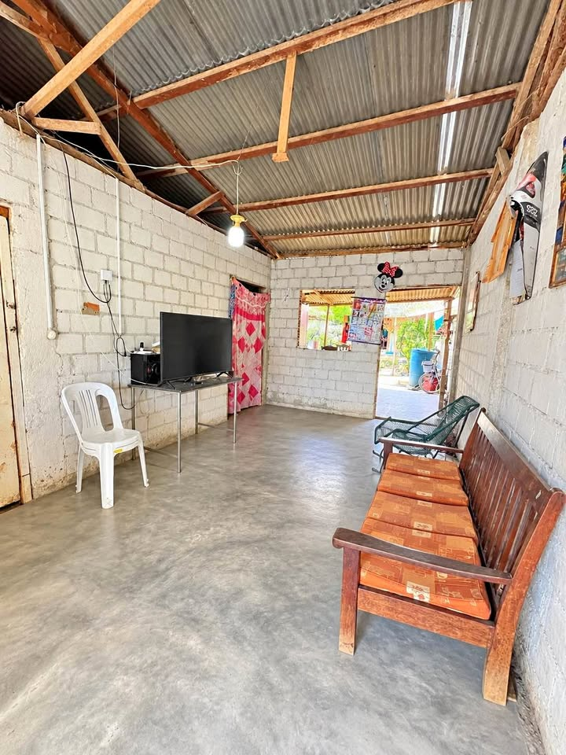

Precio desconocido 1.365 ha

TERRENO EN VENTA – BANDA DE SHILCAYO - TARAPOTO 📍 Excelente ubicación, a pocos metros del Hospital de La Banda de Shilcayo. 📐 Área: 136.50 m² Frente: 6.50 m Fondo: 21 m ✅ Luz ✅ Agua ✅ Desagüe ✅ Pista pavimentada ✅ Zona urbana y de fácil acceso Ideal para vivienda, comercio, consultorios, oficinas o proyecto de inversión. 📲 Informes: 9️⃣9️⃣3️⃣5️⃣3️⃣2️⃣2️⃣7️⃣0️⃣